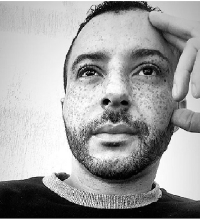

- Home
- >
- Currículo
Currículo
Dados Pessoais

Nome:
Eduardo Chagas do Nascimento Santos
Data de Nascimento:
29/12/1984
Residência:
São Paulo, Brasil
Idiomas:
Português (Nativo)
Inglês (Intermediário)
Sobre Mim
Embora tenha iniciado minha carreira profissional na área de hotelaria e seguido para áreas financeiras, foi há cerca de três anos que descobri o interesse na área de técnologia. Além dessa tragetória sempre tive uma paixão pela música, sendo professor de piano e técnica vocal por um determinado tempo. Atualmente é um dos meus passatempos assim como a leitura.
Em 2016 iniciei meu envolvimento na área de tecnologia tendo atividades voltadas para o negócios da aplicação em produção, através de incidentes e contato direto com o cliente. Devido a necessidade de me capacitar e obter conhecimento em alguma linguagem de programção ingressei no curso de Análise e desenvolvimento de sistemas, onde o foco era a linguagem Java, porém não me identifiquei com a linguagem e fiz a mudança de curso para Tecnologia do sistema da informação, esse com objetivo direto com a parte do negócio do serviço/produto. Mesmo realizando tal curso ainda havia a necessidade de me envolver com alguma liguagem de programação. Foi então que comecei a estudar por conta própria cursos on-line direcionados para desenvolvimento Web e atualmente busco uma oprtunidade de ingressar no mercado nessa área para que possa desenvolver e aprender mais sobre essa linguagem. Hoje estudo como o objetivo de ser um desenvolvedor Web Front-End em HTML/CSS e Javascript
Educação
2019 - Cursando
Gestão de Tecnologia da Informação / Tecnólogo / Senac
2010 - 2012
Gestão Financeira / Tecnólogo / Uninove
Habilidades
Tema 1
Habilidade 1 / Habilidade 2...
Tema 1
Habilidade 1 / Habilidade 2...
Tema 1
Habilidade 1 / Habilidade 2...
Tema 1
Habilidade 1 / Habilidade 2...
Experiência de Trabalho
2016 - 2020
Analista de Sistemas - Accenture - Granja Julieta
2012 - 2012
Auxiliar Contábil - Poli Design Projetos Promoções e Empreendimentos Ltda - Morumbi
2012 -2012
Auxiliar Contábil Jr. - Transamerica Flat The Advance - Paulista
Contato
eduardo_cns@hotmail.com
(11) 95121-8175
←Voltar ao início